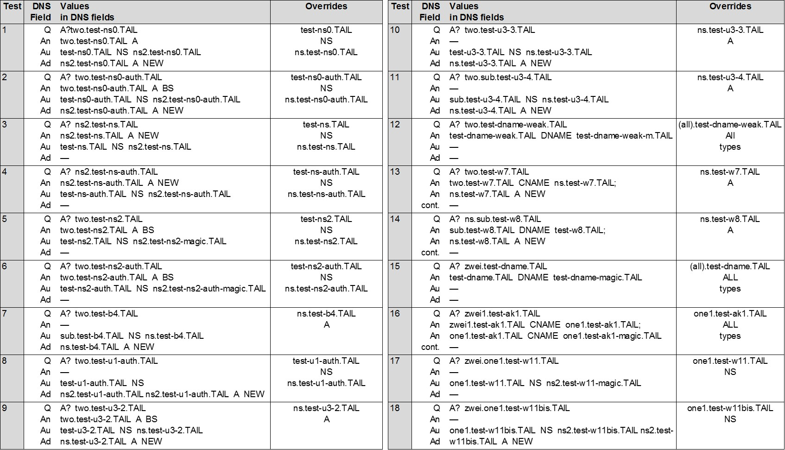

Home
DNS X-Ray: Measuring Components and Evaluating Security of DNS Resolution Platforms
Motivation
Domain Name System (DNS) is a fundamental element of the Internet providing lookup services for end usersas well as for a multitude of applications, systems and security mechanisms that depend on DNS, such as antispam
defences, routing security, firewalls, certificates and more. Caches constitute a critical component of
DNS, allowing to improve efficiency and reduce latency and traffic in the Internet. Understanding the behaviour,
configurations and topologies of caches in the DNS platforms in the Internet is important for efficiency and
security of Internet users and services. Our current view of basic Internet components is based on standard
documents and initial designs. However, most systems significantly evolved since their conception. Furthermore,
typically the networks or Internet operators make different choices when setting up their infrastructure.
In order to evaluate or improve security of the basic Internet components a clear understanding thereof is
important. Even basic questions, such as a number of caches in a DNS platform, are necessary to evaluate
vulnerabilities to cache poisoning attacks.
DNS X-ray tool
DNS X-ray is a new tool for measuring DNS resolution platforms.Our tool identifies the different components in DNS resolution platforms, in particular, the IP addresses used
for lookup of records in nameservers and the caches. We infer the number of caches used as well as the DNS
software of the caches. Our tool utilises the caching behavior and the standard DNS protocol behavior for
collection of the data and its analysis.

Caches Evaluation
Our evaluation of tests consists of three phases: seeding, injecting, and validating. During the seeding phase we plant 'honey' DNS records into caches. Specifically, we cause the tested DNS resolution platforms to issue queries for records in the our domain. During the inject phase we evaluate overwriting records by replacing them with new values (see payloads in Table below). During the validation phase we check whether the cache contains new values, namely, overwriting succeeded. We check this by probing the values of the 'honey' records. Some tests may fail. Multiple failed tests may indicate unstable network infrastructure, changes in caching hosts, censorship, attacks, packet loss... To cope with failures, we repeat our tests multiple times. Hence the output table contains a fraction of tests that succeeded. However, even a single successful test suffices for inferring whether the tested cache supports a tested "overwriting" property.
